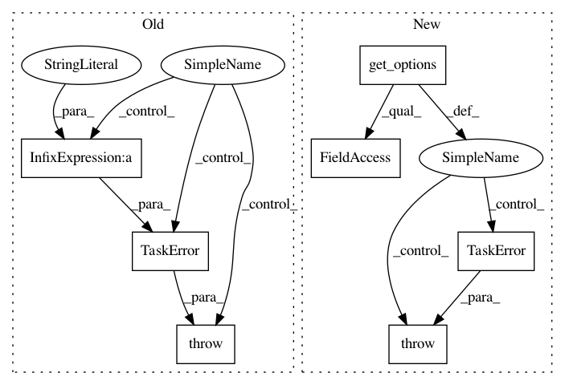

2cee9ffb825757cbe8cacfa23f305b3ad8d527ed,src/python/pants/backend/jvm/tasks/dependencies.py,Dependencies,__init__,#Dependencies#,43
Before Change
if (self.context.options.dependencies_is_internal_only and
self.context.options.dependencies_is_external_only):
error_str = "At most one of %s or %s can be selected." % (self.internal_only_flag,
self.external_only_flag)
raise TaskError(error_str)
self.is_internal_only = self.context.options.dependencies_is_internal_only
self.is_external_only = self.context.options.dependencies_is_external_only
After Change
def __init__(self, *args, **kwargs):
super(Dependencies, self).__init__(*args, **kwargs)
self.is_internal_only = self.get_options().internal_only
self.is_external_only = self.get_options().external_only
if self.is_internal_only and self.is_external_only:
raise TaskError("At most one of --internal-only or --external-only can be selected.")
def console_output(self, unused_method_argument):
for target in self.context.target_roots:
In pattern: SUPERPATTERN
Frequency: 3
Non-data size: 7
Instances
Project Name: pantsbuild/pants
Commit Name: 2cee9ffb825757cbe8cacfa23f305b3ad8d527ed
Time: 2014-11-04
Author: itykaul@gmail.com
File Name: src/python/pants/backend/jvm/tasks/dependencies.py
Class Name: Dependencies
Method Name: __init__
Project Name: pantsbuild/pants
Commit Name: ef3c4f54d0a80e78f958bf5905313a41df6f196d
Time: 2016-05-12
Author: benjyw@gmail.com
File Name: src/python/pants/backend/jvm/tasks/jvm_compile/zinc/zinc_compile.py
Class Name: BaseZincCompile
Method Name: _verify_zinc_classpath
Project Name: pantsbuild/pants
Commit Name: ee0732a42bdd614baf0e065326f1f6872a041d3a
Time: 2014-11-04
Author: benjyw@gmail.com
File Name: src/python/pants/backend/core/tasks/confluence_publish.py
Class Name: ConfluencePublish
Method Name: __init__